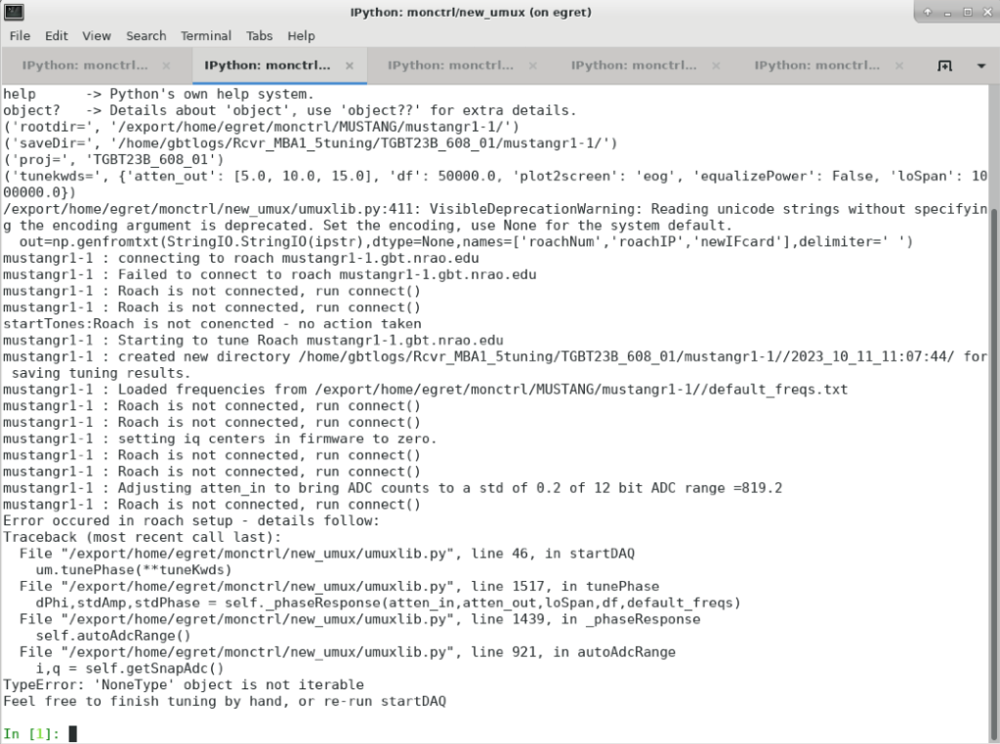
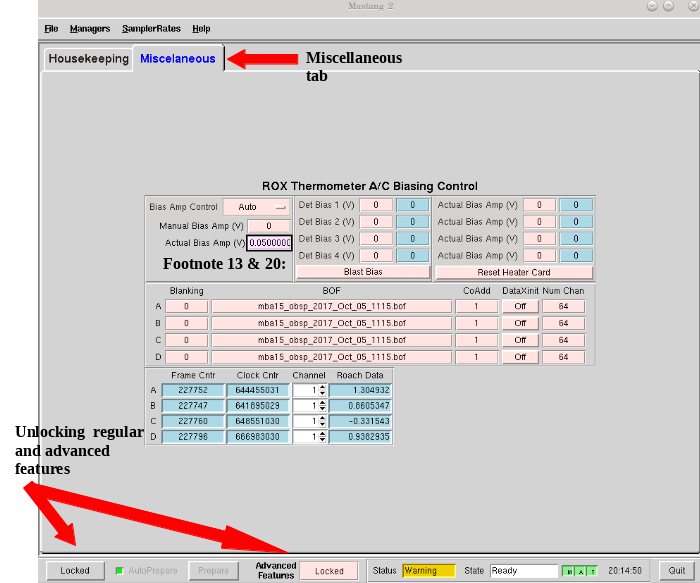
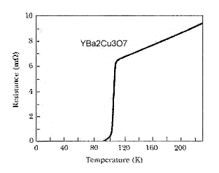
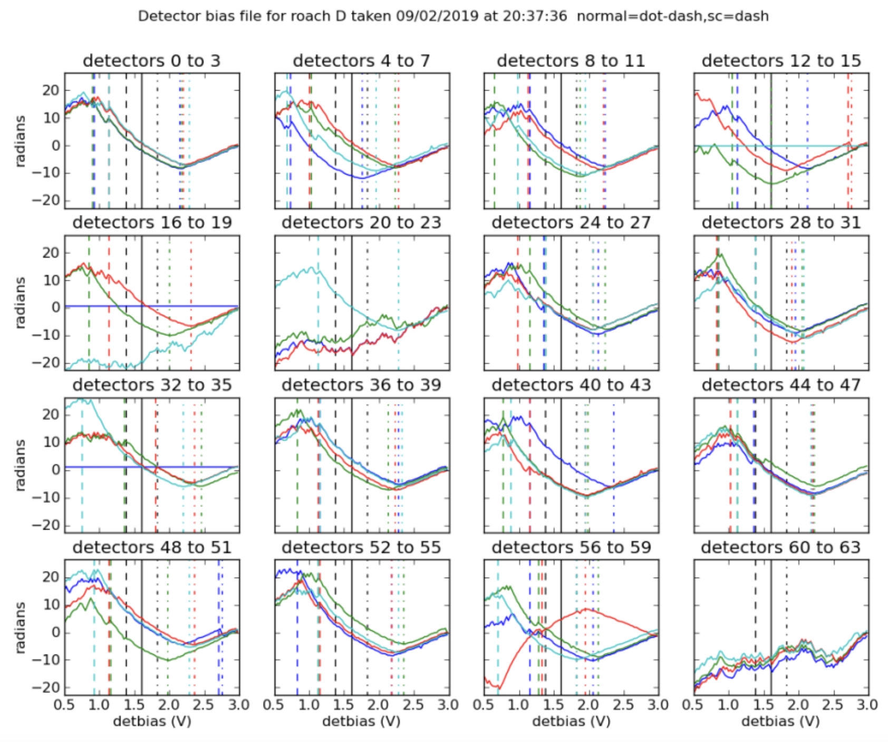

How to setup MUSTANG-2#
Tuning#
Detailed M2 instrument team instructions on tuning and biasing that can be used as a reference can be found here: https://safe.nrao.edu/wiki/bin/view/GB/Pennarray/OnGbtOps.
What is Tuning?
Tuning is MUSTANG’s rough equivalent to balancing. It has multiple channels of data and tuning is trying to ensure that the attenuation levels are all roughly equivalent. You do not need to be anywhere specific on the sky nor does MUSTANG need to be in the GBT turret for this step to be done.
Mustang has ~256 channels, ~215 feed horns, of which about ~211 are populated. It has 4 roaches, which are a type of Field Programmable Gate Array (FPGA, which is essentially a specialized CPU for data acquisition and manipulation). These 4 roaches process 64 channels each, adding up to the 256 channels. However, since not all the feed horns are populated, some of the channels in these roaches are already unused.
The IQ plots and many graphs for each roach represent all the different channels for each roach. Since some of those channels are unused, it’s not abnormal to see some channels that don’t look right. As long as the majority look okay, then things are working fine.
Note
All tuning steps should take place in time before your allotted observing time. That is, before you are given control of the GBT. Allow at least one hour of time before your allotted observing time to allow for time for things to go. You can do tuning up to several hours before the allotted observing time.
1. Preparation#
Start an observing VNC
Ask the operator to put you in the gateway for M2
2. Run startup + tuning script#
- Check that the array is cool and not cycling
Go the CLEO M2 housekeeping tab and check that the array temperature is ~400mK. Also check that the “Cycle State” on the left side of the window is IDLE and not in stages 1-5. If it is in a “stage” this means that it is cycling. If either the temperature of the array is warm or it is cycling, the array is not ready and/or not cool enough for tuning yet.
- Change directories to where the startup + tuning script is
cd /users/penarray/Public
- Run script
./startMUSTANG.bash projectCode_sessionNumberwhere
projectCodeis your proposal number (e.g.AGBT18A_014) andsessionNumberis your current (AstrID) session number (e.g.01). The session number is not the source code from the DSS e-mail. It is very important to get this right or data reduction will fail to pick up the tuning which in turn affects focusing. Check https://safe.nrao.edu/wiki/bin/view/GB/Pennarray/NewRunNotes to see how many sessions have already been observed for this project.Note
It’s important when typing out your session number that the session number has two digits. For example, if this is your 9th session, type out
AGBTProjectID_09notAGBTProjectID_9. If you do the latter option then you will not be able to take data correctly.Note
If there are to be two MUSTANG-2 projects observed in the coming night, you should include both projects/sessions separated by a comma:
./startMUSTANG.bash FirstProjectCode_SessionNumber,SecondProjectCode_SessionNumberSee further documentation about
./startMUSTANG.bashat https://safe.nrao.edu/wiki/bin/view/GB/Pennarray/OnGbtOps#Newest_Method_45_25_473_472022 under the “Advanced Usage of startMUSTANG.bash heading” (e.g., how to reconnect to the tuning during observing).If you make a mistake and get the session number wrong, after tuning is done it can be corrected by creating soft links in the same way as you do when changing projects. If you’ve accidentally mislabeled your Project ID and session number, ssh to egret using lmonctrl and type this command:
cd /home/gbtlogs/Rcvr_MBA1_5tuning/
In this directory you should be able to see your projectID and session number. Simply rename it by typing:
mv WRONG_ProjectID_sessionNumber CORRECT_ProjectID_sessionNumber
This will fix any issues with data acquisition.
- Follow process of script
The script will ask you if you really want to do this: Use the arrow keys to select yes.
- Then it will ask you to enter the lmonctrl password on egret
Hint
Ask the M2 instrument team if you don’t know it.
- Then the script will do the following:
Log into egret and restart the manager
Telnet into the iboot bar and turn on the roaches, function generator, and HEMTs
Start one xterm as
lmonctrl@egretand one gnome-terminal with 5 tabs running ipython sessions: one general and 4 labeled as M1-4 which tune each roach. Note that sometimes gnome-terminal fails in which case it will bring up seperate x-terms.During tuning it will ssh into each roach every 5 seconds
After tuning has finished it will bring up the tuning plots
Then it will set the manager into observing mode and check if data are flowing - if not it will attempt to fix this.
- Troubleshooting
See https://safe.nrao.edu/wiki/bin/view/GB/Pennarray/OnGbtOps#Newest_Method_45_25_473_472022 -> Advanced Usage of startMUSTANG.bash -> Common Problems & solutions for a few issues that have come up.
Additionally if roaches is not awake you may see an error in the tuning process like this:
with the main error being “Roach is not connected.”
If one of the roaches will not wake up, first ssh to it:
ssh root@mustangr1-#where # is the roach number. It may take a while for the ssh to go through (several minutes). Once the ssh goes through, in the ipython session for that roach you can redo the tuning by doing the
um1=startDAQ()command. Simply type in um1= and do the up arrow to find the command; you are looking for a command that looks likeum1=startDAQ(rootdir=rootdir, SaveDir=SaveDir, project=proj, doVNA=False, logLevel=”DEBUG”, tuneKwds=tuneKwds,…). If that does not work, you will have to do restart the tuning process using the same project code and session number.
- Check the IQ, Flux Ramp, and Phase Response plots output by the script.
See https://safe.nrao.edu/wiki/bin/view/GB/Pennarray/TuningResults for explanations and examples of good and bad tuning results.
3. Check that data is flowing#
Go to the Mustang Manager in CLEO. Click the miscellaneous tab, and click the “Locked” on the bottom left of the window to unlock the regular features, then also unlock advanced features by clicking the “Locked” next to Advanced Features.
Click through the channels and look for:
The “Frame Cntr” numbers should be changing and not be really low or 0.
The “Roach Data” numbers changing.
The Frame and Clock Cntr columns next to the Channel and Roach data should be similar across the 4 roaches (if they finished tuning at the same time).
If there is no data flowing in one or more roaches, you have a few potential solutions:
You can try resending the channel numbers by going to “Num Chan” -> enter 64 -> press enter.
Or turn “DataXinit” off then on.
SSH to the problematic roach(es), e.g. “ssh root@mustangr1-1”.
If these steps do not solve the problem, you may need to either restart the manager, or worst case, turn off data streaming (zero biases if you notice a problem after biasing the detectors) and power cycle the roaches (in the ibootbar). If after restarting the manager, the problem persists, restart the roaches (in ibootbar). If you restart the ROACHes, you will need to redo the tuning steps.
Note
Be sure to lock the Mustang Manager back when you are done to prevent any accidental miss-clicks. You press the same “Locked” buttons as you did in the beginning of this step, only now they will appear as “unlocked” until you click them again.
Biasing#
What is Biasing?
Biasing is finding the voltage that puts the TES detectors on the transition from superconducting to normal, the point at which the resistance of the superconductor is changing with temperature (and makes a good thermometer) for measuring the power landing on the bolometer.
More background information
The MUSTANG-2 receiver is a continuum receiver that uses a bolometric thermometer to make its measurements. Essentially, it is a highly sensitive thermometer with a filter for its bandwidth. Therefore, any photons in the bandwidth hitting the receiver will raise the temperature slightly.
It is able to be this sensitive by taking advantage of the science behind superconductors. This can be explained using the graph below:
This graph is for a specific superconductor, but the concept is the same, even if the exact temperature and resistance is different. Don’t pay attention to the numbers, but rather the trends.
As you can see, the material is only superconducting at lower temperatures. Once it gets hot enough, it becomes a regular resistor, with higher resistance with higher temperatures. What the MUSTANG-2 receiver takes advantage of is the portion of the graph called the “transition edge,” the area in between the material being a regular resistor and being a superconductor. Here, the resistance changes very rapidly with even a slight change in temperature.
What biasing does, is ensure that each roach, when observing blank sky, is set in such a way that the maximum number of channels are placed at this transition edge, in order to ensure maximum sensitivity of the receiver. You will be seeing graphs for each channel, and the point which the AI is choosing is what it believes to be the transition edge of that graph.
Because we are only able to choose one setting for each roach, hence the attempt to simply maximize the effectiveness of all the channels, usually at the expense of certain channels in that roach.
1. Run biasing#
All previous steps (tuning) can take place in the 1-hour prep before your allotted observing time, i.e. before you are given control of the GBT. However, biasing must be done on blank sky, therefore you must have control of the telescope for this and all subsequent steps (else just seeing the subreflector/ground spill over). You must be on your own account, logged onto titania or ariel, and also have permission to be in the gateway from the operator.
- Navigate to the proper directory where the biasing script lives
cd /users/penarray/Public/
- Run the bias script
./take_det_bias.bash projectCode_sessionNumberwhere
projectCode_sessionNumberis e.g.AGBT18A_014_01.Note
The bias curve plots and information is stored in
/home/gbtlogs/Rcvr_MBA1_5tuning/detbias/. However a symlink has been made in/users/penarray/Public``(/users/penarray/Public/link2detbias``) for your convenience.
- Inspect the bias plots
They are typically referred to as det bias files, as det bias is a shortened way of referring to the determined bias. You will see the speed of data coming going quickly and ‘Det Bias’ (in Misc tab) changing. After waiting a while (5 min or more), you will get a set of graphs.
A good set of biases will look like this:
You will get 4 sets of graphs like this, one for each roach. This one is for roach D, or roach 4, as shown in the title. See https://safe.nrao.edu/wiki/bin/view/GB/Pennarray/TuningResults for some examples of bad detbias plots.
The solid black lines indicate the AI-decided detbias for each channel. It’s okay to see some of the lines reversed in direction (like in detectors 56 to 59 in this example) however something is wrong with that detector when it doesn’t have that general shape (such as in detector 20-23, or 60-63). Having a couple bad detectors isn’t unheard of, it’s more bothersome if a large percentage of detectors don’t look right.
Note
If you do a skydip and there aren’t many detectors alive you should check the bias plots in
/home/gbtlogs/Rcvr_MBA1_5tuning/detbias/to see if one or more roaches had an incorrect bias calculated (see https://safe.nrao.edu/wiki/bin/view/GB/Pennarray/TuningResults#Incorrect_bias_curves).
- Close plots
when you’re done inspecting them
- Send Bias values to roaches
In the terminal, enter
Yto send bias values to roaches and anything else to ignore calculated values.
- Note calculated values
Record the calculated values are (good practice to put them in the log) by checking the Bias values in Misc! Then if the manager crashes, you know what values to re-enter.
2. Short session: Enter biases manually#
If you have a short observing session, you can manually enter the biases to save some time. To do this
unlock the manager
- roach-by-roach
set the DetBias to 5.0
press enter
wait until the blue box shows a DetBias of 5.0
then enter 1.2 into the DetBias
Important
Check with an experienced M2 team member as to what the current reliable Det Bias value is.
If the manager crashed and you need to re-enter the values that were previously calculated, follow the same process but put in your recorded values.
Issues with Manager? Restart the Manager#
If you are having issues with the manager or it crashed, you will need to restart the M2 manager. To do this, do the following:
Ask the operator to restart the MUSTANG manager using TaskMaster, even if you’ve been told how to do this yourself. Restarting machines through TaskMaster is a responsibility that is supposed to only be held by the operator.
- When the operator has told you that they have restarted the M2 manager:
Go to your Cleo Mustang Manager screen
In the drop down menu go to Managers→Off and then again to click Managers->On to to turn the manager off and back on.
Re-check the daily cycle to make sure that it is turned off.
Restarting the manager before biasing: You’re done!
- Restarting the manager after biasing:
Re-check that the det-biases are what you expected them to be.
Check that the dataXinit buttons are on.